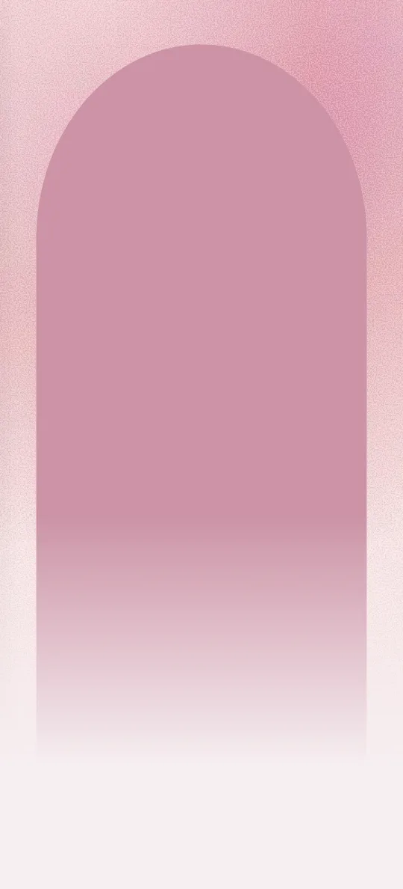
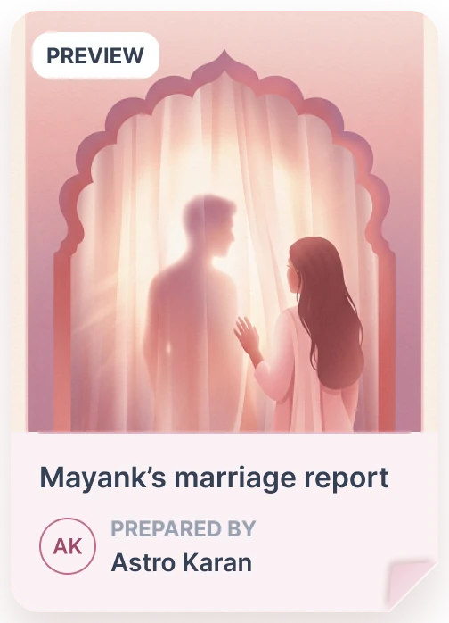
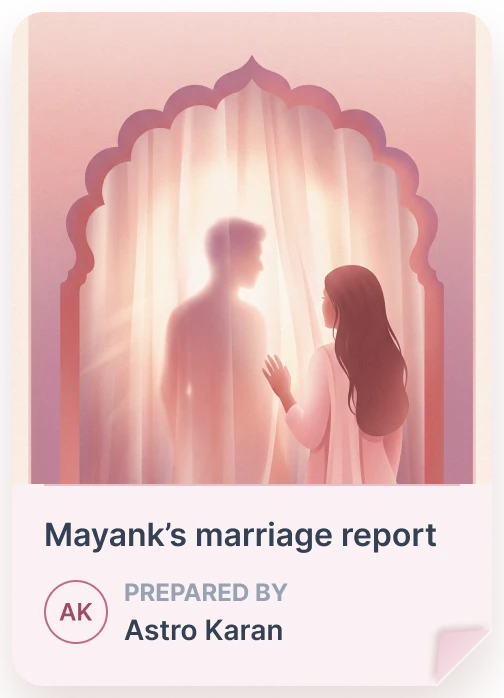
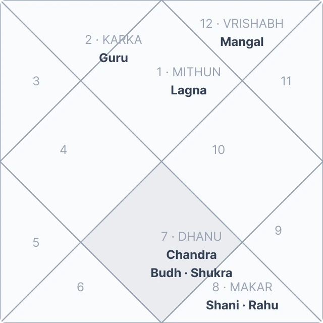
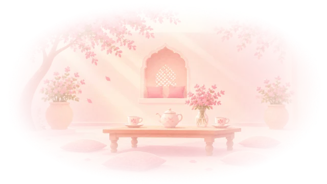

Read in English
Read in English
✧ YOUR PERSONAL VEDIC READING
A little clarity.
A shared future.
When could marriage happen? What might your partner be like? Let’s see what your Kundli reveals about the life you could build together.
Prepared 10 November 2026
BIRTH DATE
19 December 1990
BIRTH TIME
5:30 PM IST
BIRTH PLACE
Kanpur, Uttar Pradesh
LAGNA
Mithun
IN YOUR REPORT
01
Marriage timing
→
02
Your partner
→
03
Love or arranged
→
04
Manglik
→
05
Your in-laws
→
06
Money & marriage
→
07
The years ahead
→
A reading to return to.
Take your time with what matters to you.
Mayank, your marriage at a glance.
In your full report, made for your chart
Your Kundli supports a relationship with affection, friendship and the potential to build a stable family life. The main challenges are around misunderstandings and family expectations. A good match will need both an easy connection and the ability to handle difficult conversations together.
BEST PERIOD FOR MARRIAGE
July 2024 to July 2027
Already underway, with time ahead for commitment until July 2027.
WHAT SUPPORTS YOU
Affection, choice and family stability
Shukra connects love with marriage, while strong Guru supports building a family together. Personal choice has an important place in how your rishta moves forward.
WHAT NEEDS CARE
Words, expectations and shared duties
Budh’s position suggests a tendency to revisit words or misunderstand intentions. Shani with Rahu points to adjustment around family customs, responsibilities and money.
♡
Your partner’s traits
Wit, affection and a mind of their own.
⌘
Your marriage path
Personal choice, with family involvement.
✧
Your Manglik reading
The indication cancels under the rule used here.
This reading follows traditional Vedic interpretation. How these indications play out can vary based on your choices, your partner and your circumstances.
What shapes your marriage reading
In your full report, made for your chart
Your Lagna is Mithun. The 7th house relates to marriage, while the 2nd and 8th houses bring family life and shared responsibilities into the picture.

Lagna chart · Marriage-focused view
Numbers mark houses. Only selected Graha are shown.
07 · MARRIAGE
Connection matters to you
Budh and Shukra bring conversation and affection into the partnership. Chandra adds emotional involvement.
02 · FAMILY & SAVINGS
A wish to build something lasting
Strong Guru connects your marriage with family stability and shared security.
08 · SHARED RESPONSIBILITIES
Family adjustment needs attention
Shani and Rahu suggest differences in expectations. Duties and money need clear agreements.
12 · MANGAL
The sign changes the Manglik reading
Mangal is in Vrishabh. Under the traditional rule used here, the 12th-house indication cancels.
YOUR READING, IN DETAIL
When is my strongest marriage window
In your full report, made for your chart
YOUR READING
Your Shukra period runs from July 2024 to July 2027. Within this broader phase, the months ahead until July 2027 are favourable for taking a relationship towards marriage.
Your Lagna, the sign rising at your birth, is Mithun. Its 7th house falls in Dhanu. This is your Saptam Bhav, the house connected with marriage. Guru rules Dhanu, making it your Saptamesh, the ruling Graha of the marriage house.
Guru sits in Karka, where it is uchcha, or especially strong, in your 2nd house of family and savings. This connects marriage with establishing a family and building security together.
Why this period stands out
Your primary Dasha is Rahu Mahadasha. A Mahadasha is a long phase of life associated with one Graha, which sets its broad themes. Within it runs an Antardasha, a shorter phase associated with another Graha. The two periods are read together. Your current Antardasha is Shukra, running from July 2024 to July 2027. Shukra is associated with love and partnership, making relationships an important theme during this phase.
Shukra rules your 5th house of love and occupies your 7th house of marriage. Its period brings both relationships and commitment into focus. This is why the months ahead until July 2027 deserve attention. The phase is already underway; it does not begin on the date of this report.
If a relationship or proposal is developing, this period is favourable for discussing commitment and involving the families. If you are looking for someone, making room for introductions gives that possibility a practical opening.
The window describes a favourable period for marriage-related developments. A particular wedding date requires a separate muhurta reading.
Back to your overview
↑
The partner your chart points towards
YOUR READING
Someone with a quick sense of humour, a mind of their own and an easy way of talking with you.
Budh, linked with speech and understanding, sits just over one degree from Shukra, linked with affection. The two are together in your Navamsha as well. This is the finer chart used to understand married life.
That repetition makes conversation an important part of the partner reading. Someone you want to tell a story to before you have even reached home fits this combination well.
Work and background
The house associated with your partner’s work falls in Kanya, ruled by Budh. Budh is linked with communication, analysis and working with information. The strongest indications involve communication, teaching, advising or handling clients. Shukra adds the possibility of creative work.
Guru’s connection with the family house suggests an upbringing where learning or family customs matter. The indication for communication is clearer than the indication for a particular profession or background.
Where understanding needs care
Budh is vakri, meaning it appears to move backwards, and sits close to Surya. In this traditional reading, that adds a tendency to revisit words or misunderstand what was intended. Explaining what bothered you directly can help a discussion move forward.
Back to your overview
↑
Want this for your chart?
Astro Hemali makes your report from your own birth details. One-time, no subscription.
Get my report · ₹49
Love marriage or arranged marriage
In your full report, made for your chart
YOUR READING
Your chart leans towards personal choice, with the families involved in taking the rishta forward.
Shukra connects the house of love with the house of marriage. Budh, who rules your own Lagna, sits beside it. Together, these placements give weight to your involvement in choosing the person.
A family introduction can also fit this reading. The stronger indication is that you will want to know the person and arrive at your own “yes” before settling the details.
Back to your overview
↑
Am I Manglik
In your full report, made for your chart
YOUR READING
The Manglik indication cancels under the traditional rule used in your reading.
Mangal occupies the 12th house from your Lagna. That is one of the houses checked for Mangal Dosha, which explains why a house-only assessment can return a “yes”.
Your Mangal is in Vrishabh Rashi. The sign matters alongside its house position. Mangal in Vrishabh in the 12th house is an exception to the Manglik rule, so this placement does not carry the usual Manglik indication.
Mangal falls 6th from both Chandra and Shukra, so neither of these positions adds a Manglik indication. Mayank, under this reading, you can set this particular worry aside.
Back to your overview
↑
Will my in-laws be supportive
In your full report, made for your chart
YOUR READING
Your chart points towards practical support, with some adjustment around family expectations.

Your 8th house, Makar, represents your partner’s family in this reading. Shani occupies its own sign here.
This suggests a family that takes responsibilities seriously. Care may show up through someone handling arrangements, helping with a difficult task or making sure an obligation is met.
Rahu sits with Shani. Differences in customs or expectations may need explaining. Something that feels obvious to one family may be unfamiliar to the other.
Joint family or a place of your own
The practical question is how much room you have to decide things as a couple. Discuss visits, spending and household duties before settling into a living arrangement. If everyday decisions repeatedly need everyone’s agreement, living nearby may provide a more comfortable balance.
Back to your overview
↑

How money may change after marriage
In your full report, made for your chart
YOUR READING
The reading is favourable for building savings together and working towards shared goals.
Guru, the ruler of your marriage house, occupies the 2nd house of family and savings. Chandra, the ruler of that house, occupies Guru’s sign in your marriage house.
This exchange of signs is called Parivartan. It connects your partnership with family security. Your partner may have an important influence on how you plan, save and make commitments.
Where the adjustment comes
Shani and Rahu occupy the house of shared obligations, opposite Guru. Support for the wider family may compete with what you want to build together.
Before committing to a major family expense, agree on what you can comfortably contribute and what you want to reserve for your own plans. That gives your shared goals a clear place in the household budget.
Back to your overview
↑
Your answers will be different
Every chart is unique. Get yours made by Astro Hemali. Report ready in 5 mins.
Get my report · ₹49
Your married life over the coming decades
In your full report, made for your chart
YOUR READING
From 2026, the focus is on commitment and finding a shared direction. The years from 2031 favour greater stability, while 2047 onwards puts more emphasis on how you support each other in everyday life.
The longer planetary periods give the broad direction of the years ahead. Guru is strong in your birth chart and sits in Dhanu, its own sign, in your Navamsha, the chart associated with married life. Shani, too, is in its own sign. These placements support stability, while the communication and family pressures described earlier still need care.
The reading starts now, in November 2026. These are calendar decades, not the first, second and third decades after your wedding. They describe broad tendencies; they do not mean every year within a decade will feel the same.
2026 to 2036
Choosing each other, then building a life together
The Shukra phase that began in July 2024 continues until July 2027, keeping commitment in focus at the start of this decade. If you are considering someone, this is a time to move beyond attraction and understand how the two of you would actually live together. Family involvement, where to live and expectations from marriage deserve open conversations.
From July 2027 to January 2031, Rahu’s longer phase continues, but Shukra’s shorter phase has ended. These years should therefore not be treated as a continuation of the same marriage window. This does not rule out marriage during them. It means the earlier timing indication should not be stretched across the whole decade.
From January 2031, Guru’s main period begins. With Guru supporting marriage in both your birth chart and Navamsha, the reading becomes more favourable for a settled family life. The emphasis moves towards finding common ground and making plans that both partners can stand behind.
What will help you most
Do not leave important expectations for later. Talk about time with each other, work priorities, money and the role of both families. Your Budh and Shukra connection gives communication an important place in the relationship. Being able to discuss an uncomfortable subject calmly matters as much as enjoying the good days.
2036 to 2046
Growing together without taking each other for granted
This entire decade falls within Guru’s main period, which continues until January 2047. Of the three decades, this has the most consistent support for a steady partnership in the broad reading. There is more emphasis on building on what you have created together than on repeatedly finding your footing.
In daily life, that can show up as better agreement on long-term plans, a clearer sense of what matters to your family, and more willingness to support each other’s goals. This is a supportive backdrop for decisions about a home or shared responsibilities; it is not a promise that a particular milestone will happen.
Where the relationship needs care
The point to watch is how much space wider family responsibilities take up. Supporting relatives can be meaningful, but neither partner should feel that the marriage always comes last. Discuss commitments together before saying yes on the other person’s behalf.
Keep some time that belongs only to the two of you. A settled relationship still needs affection, appreciation and conversation beyond bills and duties. The strength of this phase is best used to build that closeness, rather than assume it will look after itself.
2046 to 2056
Being there for each other, in practical ways
The decade begins in Guru’s period. In January 2047, Shani’s main period starts, bringing a different emphasis. Shani in its own sign supports patience, consistency and taking responsibility. The reading points towards a bond that draws strength from being able to rely on each other.
Care may be expressed more through actions: keeping a promise, sharing a difficult task or making room for the other person’s needs. That can deepen companionship, provided both partners feel supported. A more practical phase does not, by itself, mean a less loving marriage.
Where the relationship needs care
Watch for duty replacing warmth. If one person quietly handles most of the work, resentment can build even when neither intends to hurt the other. Revisit how responsibilities are shared, especially when routines or family needs change.
Keep asking each other what would make life easier and more enjoyable. Small gestures and time together remain important. Be dependable, but also make your affection visible.
Back to your overview
↑
Mayank, here is what to take away
In your full report, made for your chart
Your chart supports affection, personal choice and the potential for a stable family life. The areas that need care are misunderstandings, family expectations and how responsibilities are shared. Keep both sides in mind when considering a rishta.
The timelines to remember
UNTIL JULY 2027 · COMMITMENT
The Shukra phase that began in July 2024 continues until July 2027. This is the favourable marriage period highlighted in your reading. If you are considering someone, use the months ahead to understand each other and discuss commitment. If you are looking, make room for introductions. A favourable period is a reason to be open, not to rush your yes.
JANUARY 2031 to JANUARY 2047 · BUILDING STABILITY
Guru’s main period supports a more settled partnership and shared family goals. This is the longer stretch for building a life together, not a suggestion to wait until 2031 to marry. Keep wider family commitments in balance with the time and resources you need as a couple.
FROM JANUARY 2047 · SHARED RESPONSIBILITY
Shani’s main period puts more emphasis on dependability and everyday support. Share the load openly, and keep affection visible so that the relationship does not become only about duties.
Your next steps
In your full report, made for your chart
1
Look for ease in difficult conversations
Along with attraction, notice how the two of you handle a disagreement. Can you say what bothered you, listen to the other person and reach an understanding? This matters especially with the communication tendencies in your chart.
2
Discuss family and money before committing
Talk about where you would live, time with both families, household responsibilities, financial support for relatives and your own savings goals. Do not assume that an expectation which feels obvious to you will feel the same to your partner.
3
Take the next step without treating the dates as a deadline
For an existing rishta, agree on the next conversation or family meeting. If you are still looking, decide how you want to meet people and follow through. The window until July 2027 supports moving things forward; it does not replace getting to know the person.
4
Keep the Manglik finding in perspective
The Manglik indication cancels under the interpretation used in your reading. That particular concern need not dominate your decision. This report describes your chart; understanding compatibility with a specific person also needs their birth details.
Mayank, the main takeaway is simple: be open to commitment, be clear about expectations, and choose someone with whom understanding can grow alongside affection.
✧
Prepared with care for Mayank.
From Astro Karan · AstroChat
Return to the beginning ↑
How was this report?


MORE ON YOUR CHART
Kundli Milan Report
4.8
· 96,440 reads
₹49
₹499
90% off
Buy now
Monthly Wealth Report
4.6
· 71,250 reads
₹49
₹499
90% off
Buy now
Monthly Relationship Report
4.7
· 48,120 reads
₹49
₹499
90% off
Buy now
This reading is based on your Kundli details and traditional Vedic interpretation. How things turn out can also change with your own choices and circumstances.
Learn which dosha is delaying your marriage
₹49
₹499
90% OFF
Buy Now
Astro Hemali
Replies instantly
₹20/min
₹10/min
Ask Hemali about your report…